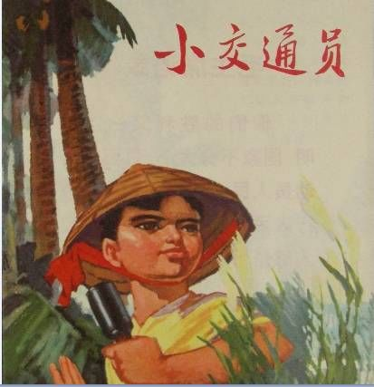

小交通员潘冬子

-->
1934年秋，主力红军撤离中央根据地。
参加了主力红军的父亲出发前给冬子留下了一颗闪闪的红星。
冬子把它当作宝贝似的收藏了起来。红军一走，
大土豪胡汉三又回来了，柳溪又陷入了白色恐怖之中。
冬子的母亲作为游击队的交通员，走东村奔西庄地传达着党的精神。
在一次行动中，冬子妈被胡汉三的“靖卫团”围困在燃烧着熊熊烈火的草屋内母亲的从容就义，
使小冬子突然长大了许多，他怀揣爸爸留下的红星，
承担起了游击队交通员工作。他为山上游击队筹盐，
巧妙地躲过了“靖卫团”的搜查。冬子还机灵地做了米店的伙计，
搞到了确切的情报，破坏了胡汉三的搜山计划。
冬子在沉着自如地对付了胡汉三的多次试探和盘问后，
抓住良机，砍死了胡汉三。1938年，江南游击队准备开赴抗日前线
，冬子和父亲又见面了。他带上那颗保存了多年的红星，成了一名真正的红军战士。